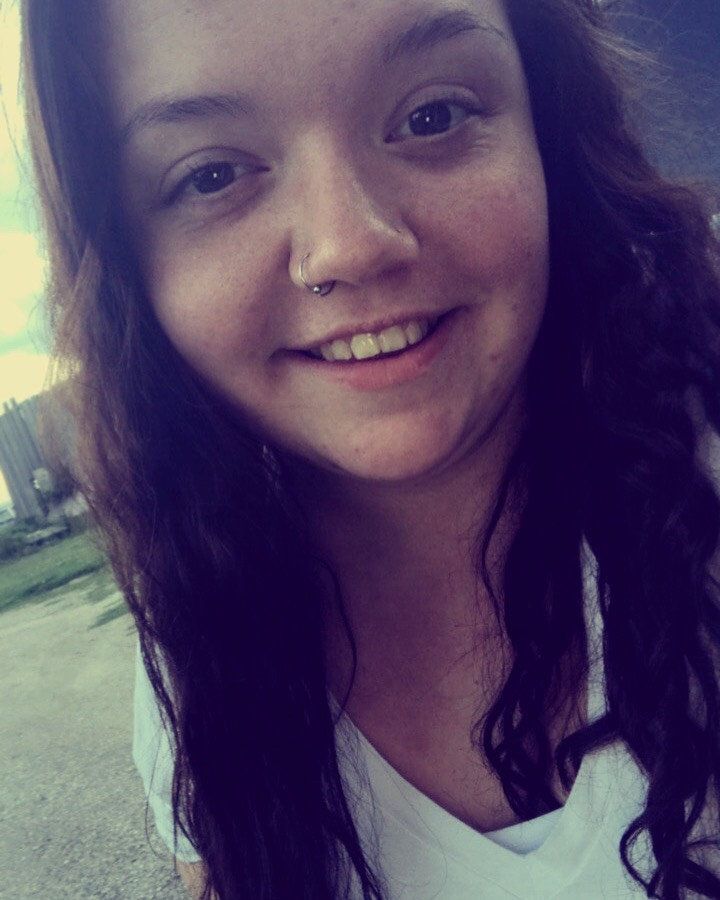
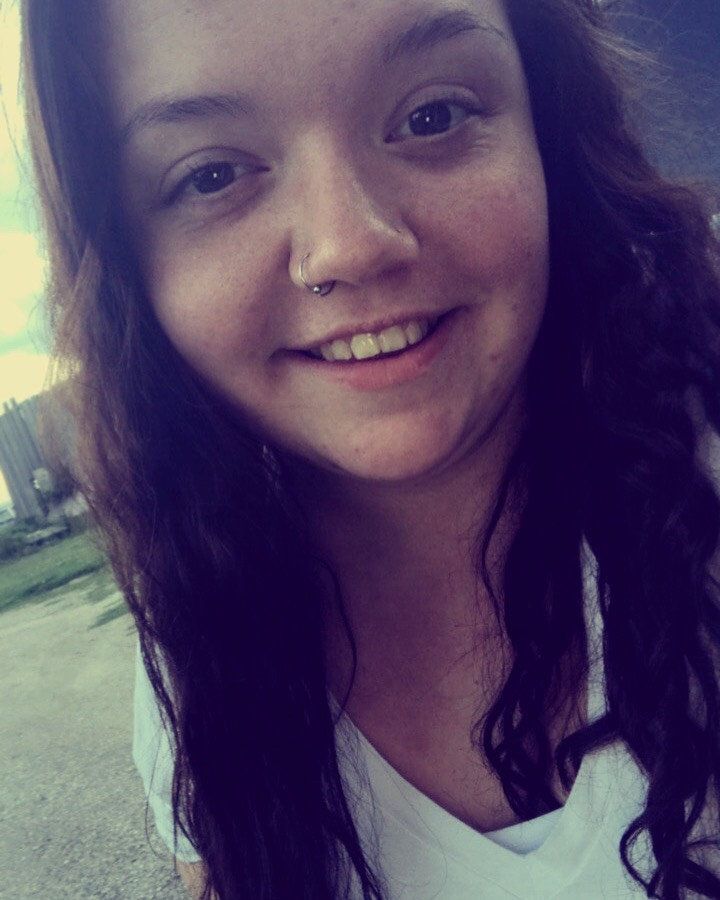

I'm Kathrine Rapp,Social media marketing major at Graceland University.
I'm from Oskaloosa, Iowa. I am the middle child. I have an older sister and a younger brother.
My extend family is very large.
Family and friends are very important to me they are
the reasons I do the things I do.
During this time at school I have worked as a receptionist,peer mentor,yearbook,and a office assistant.
Being a first generation student(first in intermediate family)
has been something that helps me get through being in college.